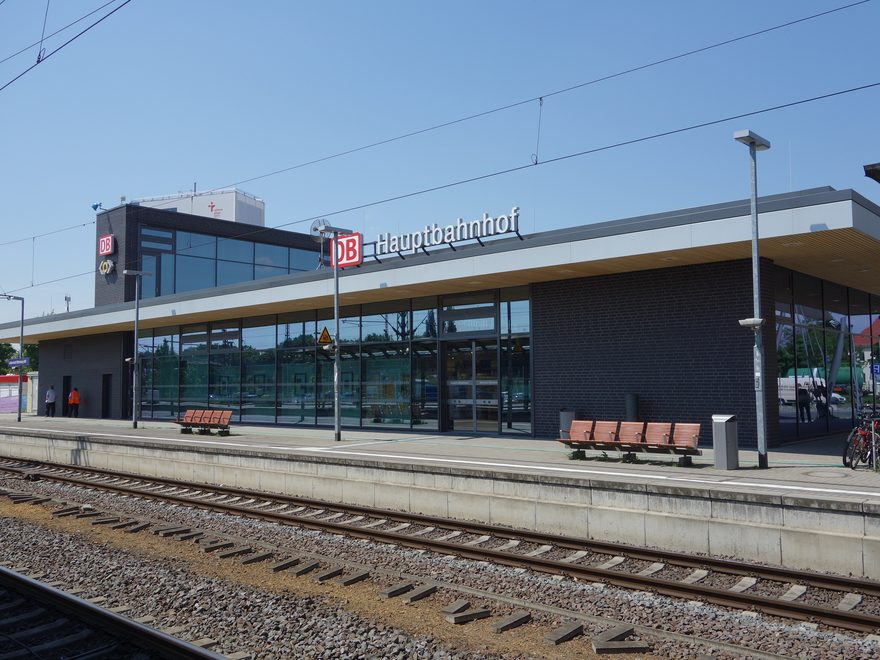

One street carries the whole town: 1.9 km from the station to the Theses Door. Tap a stop for the photo, the price, the hours and my take. Hours and prices checked on 4 September 2026.

OPEN
COST
Photographs rendered in this tool, via Wikimedia Commons: